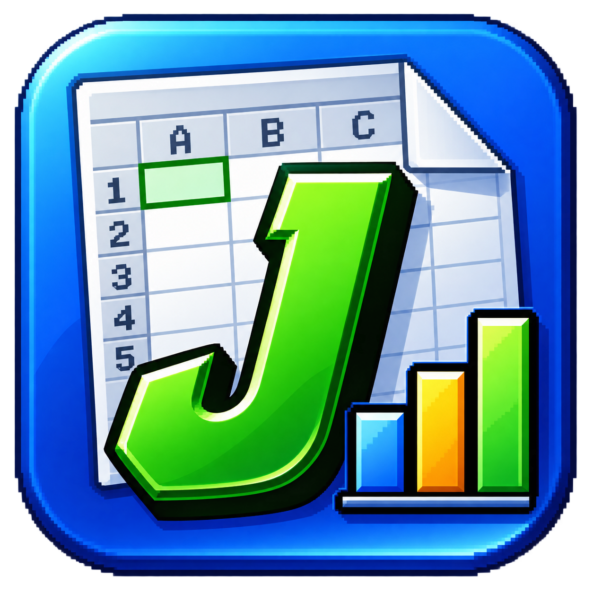
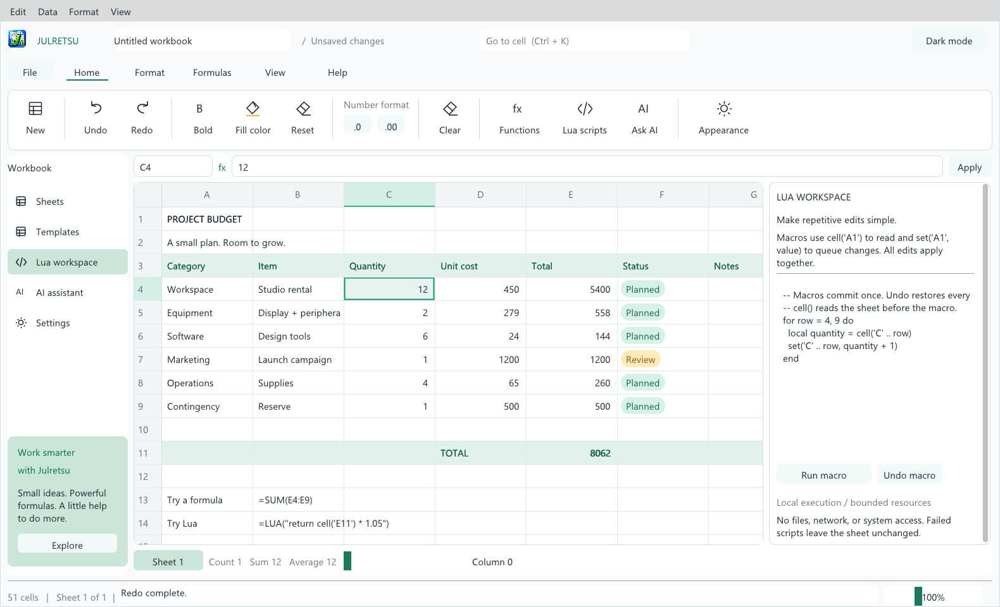

01 / YOUR WORKSPACE
Feel right at home.
A familiar grid, a formula bar, and clear controls. Work in light or dark mode, make your calculations, and save your workbook on your own device.

julretsu. Get JulretsuMake room for your numbers, your plans, and your next big idea. A focused spreadsheet workspace that feels at home on your desktop.
Windows · Linux · macOS · Free to use

Plan a budget. Explore a calculation. Automate the repetitive parts. Keep the tools you need close to the work you care about.
A familiar grid, a formula bar, and clear controls. Work in light or dark mode, make your calculations, and save your workbook on your own device.
Import and export CSV and Excel .xlsx files. Keep a native .julretsu copy to preserve the details supported by Julretsu.
Use built-in formulas for everyday calculations. Reach for Lua scripts when a repetitive task needs a little more flexibility.
=SUM(E4:E9)Connect your own provider, describe a change, and review the proposed edits before applying them. AI is optional; provider access and fees are separate.
Yes. The Julretsu license allows free personal, educational, and business use. Julretsu remains proprietary software; permission to use it does not transfer ownership. Read the full license.
It opens the Julretsu download folder on MediaFire. Choose the package for your operating system: Windows, Linux, or macOS. If it is an archive, extract it before opening the application and keep the supplied files together.
Julretsu supports CSV and a subset of .xlsx features. Complex Excel workbooks may contain features that do not carry over. Keep your original file and check the format compatibility guide before importing important work.
No. Spreadsheet editing and local calculations work without an AI connection. If you choose to use the assistant, it sends your request and worksheet context to your selected provider. You review its proposed changes before applying them.
Free to use. Yours to make something with.
Available for Windows, Linux, and macOS.
Opens the download folder on MediaFire.
Donations are optional and help keep Julretsu going.